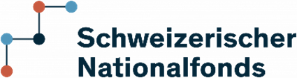

Über das Projekt:
Das interdisziplinäre Forschungsprojekt «ShopHero» hat zum Ziel, einen forschungsbasierten Beitrag an die Reduktion von Lebensmittelabfällen und der Erhöhung der Nachhaltigkeit von Lebensmitteleinkäufen zu leisten. ShopHero entwickelt dabei ein Modell für die Auswertung digitaler Einkaufsdaten, welche durch ein Kundenkartensystem von Lebensmitteleinzelhändlern gesammelt werden. Die Daten werden genutzt, um den Umweltfussabdruck der getätigten Einkäufe sowie die zu Hause anfallenden Lebensmittelverluste vorauszusagen.
Im Rahmen des Vorprojekts «BioPrint: Fostering Biodiversity Footprint Management along Value Chains» des Schweizer Nationalfonds (NFP82 – Biodiversität und Ökosystemleistungen) wurde der Biodiversitäts-Fussabdruck eines ausgewählten, repräsentativen, Warenkorbs mit 51 Lebensmitteln berechnet.
Drittmittelgeber und Mitarbeit: Die Projekte «ShopHero» (Nr. 197633) und «BioPrint (Nr. 226932) wurde durch den Schweizerischen Nationalfonds (SNF) gefördert und in Zusammenarbeit der Zürcher Hochschule für Angewandte Wissenschaften mit der Universität Zürich umgesetzt.
Weitere Informationen zum Projekt «ShopHero»: Link
Was ist Biodiversität und wie wurde der Biodiversitäts-Fussabdruck berechnet?
Der Begriff Biodiversität ist vielschichtig und kann verschiedene Aspekte umfassen:
- Anzahl der verschiedenen Arten in einem bestimmten Gebiet
- Zahl der Individuen pro Art
- Vielfalt innerhalb oder zwischen Arten
- Genetische Vielfalt
- Funktionelle Vielfalt
Heute gibt es global über 2 Millionen erfasste Arten (Catalogue of Life, 20211). Die geschätzte Zahl an existierenden Spezies reicht von 9 Millionen (Sweetlove, 20112) bis über 1 Milliarde Spezies (Locey & Lennon, 20163). Seit 1970 ist der Wildtierbestand jedoch global um knapp 70% zurückgegangen, mit einem fortführenden negativen Trend. Verantwortlich dafür sind unterschiedliche Treiber:
- Klimawandel
- Direkte Ausbeutung (bsp. Überfischung)
- Invasive Arten
- Landnutzungsänderung
- Verschmutzung
- Weitere (Bsp. Freizeitaktivitäten, Tourismus…)
Der fortlaufende Verlust der Biodiversität hat weitreichende negative Auswirkungen wie der Verlust von Ökosystemleistungen, die Gefährdung der Nahrungsmittelsicherheit oder sinkende Widerstandsfähigkeit gegen den Klimawandel und wirtschaftliche Auswirkungen.
Die Berechnung des Biodiversitätsverlusts wurde mithilfe der Methode von Chaudhary & Brooks (2018)4 gemacht, welche den potenziellen Speziesverlust durch Landnutzung betrachtet. Weitere Effekte wie Klimawandel, Verschmutzung, invasive Spezies oder Übernutzung von Arten (bsp. Überfischung und Jagd) werden bei dieser Methode nicht betrachtet. Der Biodiversitäts-Fussabdruck wird in PDF angegeben, kurz für «Potentially Disappeared Fraction of species», also potenziell verschwindende Spezies. Die natürliche Biodiversität unterscheidet sich je nach Region beträchtlich. Lebensmittel, welche aus Anbaugebieten mit hoher Biodiversität kommen, haben einen entsprechend höheren Biodiversitäts-Fussabdruck. Dazu gehören insbesondere Produkte aus tropischen Ländern.
Wie wurde die Berechnung gemacht? Wir haben den Biodiversitäts-Fussabdruck von 1kg Lebensmittel und den in der Schweiz anfallenden jährlichen Konsum einer Person berechnet. Dazu wurden folgende Informationen benötigt:
| Beschreibung | Quelle | Link |
|---|---|---|
| Berechnung des Schweizer Netto-Konsums je Produkt und Jahr = Nettoimport + Schweizer Produktion. | Federal Office for Customs and Border Security (FOCBS), Swiss Federal Administration | Hier klicken |
| Landverbrauch pro kg Produkt (m2/kg), welcher sich aus dem Ertrag berechnet | Nutzpflanzen und tierische Erzeugnisse: Agriculture Organization of the United Nations (FAO) | Hier klicken |
| Detaillierte Handelsmatrix: Food and Agriculture Organization of the United Nations (FAO) | Hier klicken | |
| Berechnung des potenziellen Speziesverlusts pro (m2 und Land unter Verwendung von länderspezifischen Charakterisierungsfaktoren. | Chaudhary & Brooks (2018): Land Use Intensity-Specific Global Characterization Factors to Assess Product Biodiversity Footprints | Hier klicken |
Unsere Berechnungen beziehen sich auf eine allgemeine Durchschnitts-Situation und sind mit relativ hoher Unsicherheit behaftet. Die Resultate können zur Identifikation von potenziell kritischen Lebensmitteln eingesetzt werden. Im Einzelfall ist zu erwarten, dass spezifische Lieferketten grosse Abweichungen in ihrem Biodiversitätsfussabdruck haben.
Resultate
Der Biodiversitätsverlust des Warenkorbs wird durch einige den Konsum von Kakao (27.9%), Kaffee (22.1%) und Fleisch (11.8%), Olivenöl (6.1%) und Wein (4.5%) dominiert (kumuliert 72.4%). Die restlichen 46 Produkte haben einen kumulierten Anteil von 27.6%.
Reduktionspotenziale
Es gibt mehrere Möglichkeiten, sowohl den Biodiversitäts- und Klima-Fussabdruck der Ernährung zu reduzieren. Folgende Massnahmen haben die grösste Wirkung:
- Lebensmittelverluste vermeiden: Gemäss einer Studie der ETH Zürich (Beretta und Hellweg, 20195) werden in der Schweiz jährlich rund 2.8 Mio. Tonnen Lebensmittel weggeworfen. Dies entspricht etwa 330 kg vermeidbarem Lebensmittelverlusten pro Person und Jahr, was zu unnötiger Produktion und Landverbrauch führt. Also: Lieber weniger einkaufen, Reste verwerten und darauf achten, dass Lebensmittel nicht vergammeln.
- «Luxusprodukte» reduzieren: Ja, leider mögen wir oftmals genau diejenigen Produkte besonders, welche hohe Auswirkungen auf Biodiversität haben: zum Beispiel Schokolade und Kaffee. Eine gesunde Reduktion und bewusstes Konsumieren bewirken schon viel.
- Reduzierter Fleischkonsum: Fleisch hat einen überdurchschnittlich hohen Biodiversitäts- als auch Klimafussabdruck. Eine mehr pflanzenbasierte Ernährung reduziert die Umweltbelastung deutlich.
- Flugtransporte vermeiden: Der Flug-Transport von Gütern kann einen starken Einfluss auf den Klima-Fussabdruck haben. Eingeflogene Spargeln aus Mexiko haben bis zu 10-fach höhere CO2-Emissionen im Vergleich zu Schweizer Freilandspargeln.
- Saisonal vs. Gewächshaus-Anbau: Die Beheizung von Gewächshäusern kann einen hohen Beitrag zum Klima-Fussabdruck leisten. Saisonal produzierte Produkte werden nicht oder nur minim beheizt und haben deutlich tiefere Emissionen.
Kontakt für weitere Informationen:
Zürcher Hochschule für Angewandte Wissenschaften
Matthias Stucki
matthias.stucki@zhaw.ch
+41 58 934 57 19
Forschungsgruppe Ökobilanzierung: www.zhaw.ch/iunr/lca
Fußnoten
Catalogue of Life. (2021). COL Checklist, 2021-06-10. https://web.archive.org/web/20210627174218/https://www.catalogueoflife.org/data/metadata↩︎
Sweetlove, L. (2011). Number of species on Earth tagged at 8.7 million. Nature, news.2011.498. https://doi.org/10.1038/news.2011.498↩︎
Locey, K. J., & Lennon, J. T. (2016). Scaling laws predict global microbial diversity. Proceedings of the National Academy of Sciences, 113(21), 5970–5975. https://doi.org/10.1073/pnas.1521291113↩︎
Chaudhary, A., & Brooks, T. M. (2018). Land Use Intensity-Specific Global Characterization Factors to Assess Product Biodiversity Footprints. Environmental Science & Technology, 52(9), 5094–5104. https://doi.org/10.1021/acs.est.7b05570↩︎
Beretta, C. & Hellweg, S. (2019). Lebensmittelverluste in der Schweiz: Mengen und Umweltbelastung. Wissenschaftlicher Schlussbericht, Oktober 2019. ETH Zürich (Download: www.bafu.admin.ch/lebensmittelabfaelle)↩︎